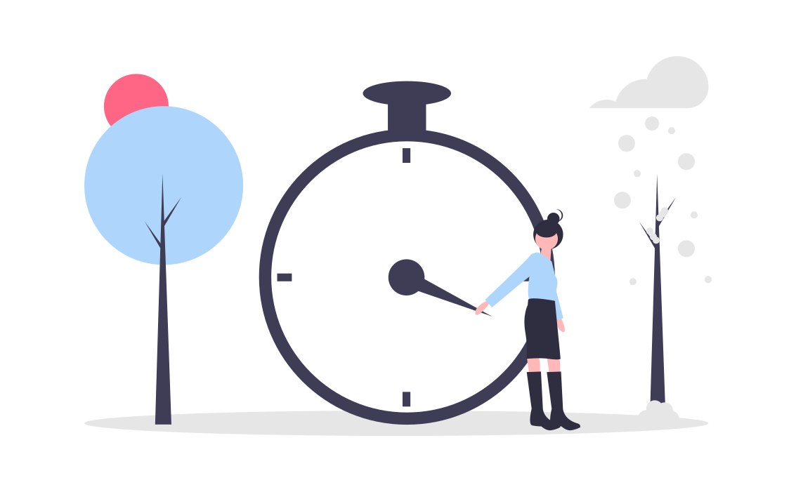

Stay Strong and Independent
Take a few minutes to check in with your physical well-being. These simple assessments can help you understand if there are areas where you might benefit from extra support to maintain your independence.
PRISMA 7 Questionnaire
1. In general, do you have any health problems that require you to limit your activities?
Yes No2. Do you need someone to help you on a regular basis?
Yes No3. In general, do you have any health problems that require you to stay at home?
Yes No4. In case of need, can you count on someone close to you?
Yes No5. Do you regularly use a stick, walker, or wheelchair to get about?
Yes NoGait Speed Test
